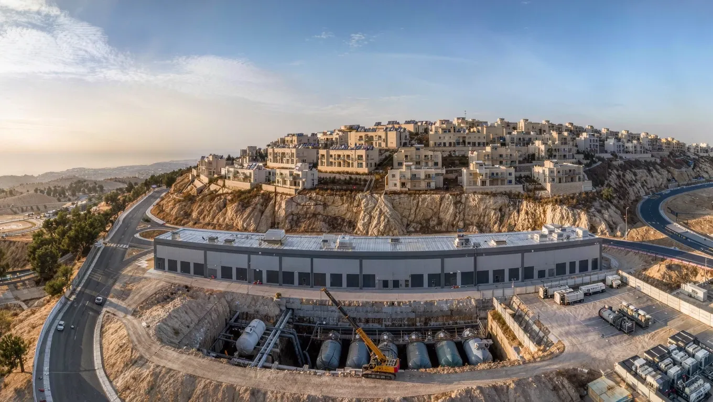

הקמת תחנות דלק
הקמת תחנות דלק שיפוץ ושדרוג תחנות
שיפוץ ושדרוג תחנות תחנות גז
תחנות גז עבודות צנרת דלק
עבודות צנרת דלק עבודות עפר ופיתוח
עבודות עפר ופיתוח תשתיות דלק לחוות שרתים
תשתיות דלק לחוות שרתים- ראשי
- תחומי פעילות
- חוות שרתים
תשתיות דלק וגנרטורי חירום לחוות שרתים, כשההספק לא יכול ליפול
בורות ובסיסים, מיכלי דלק תת־קרקעיים ועיליים, מיכלי יום, צנרת הזנה בתצורת N+1 וחיבור למערכות הבקרה, בתיאום עם יועצי החשמל והרגולציה.

מתחנת דלק לחוות שרתים
חוות שרתים מגובה בגנרטורי חירום, והגנרטורים תלויים בתשתית הדלק: מיכלי אחסון גדולים, מיכלי יום ליד כל גנרטור, וצנרת הזנה שחייבת להמשיך לעבוד גם כשקו אחד יוצא מכלל שימוש. זו אותה הנדסה של תחנת דלק, בקנה מידה גדול יותר ועם דרישת אמינות שאין בה מקום לטעות.
הניסיון של עשרות שנים בתחנות דלק, מיכלים בדופן כפולה, צנרת אטומה ובדיקות מתועדות, הוביל אותנו לתחום הזה. אנחנו עובדים בתיאום עם יועצי החשמל, המתכננים והרגולציה, ומוסרים תשתית שנבדקה קטע אחר קטע.

מהמיכל ועד הגנרטור, בלי נקודת כשל אחת
למסלול הדלק בחווהמהמיכל הראשי ועד הגנרטור
זה המסלול שהדלק עובר בחוות שרתים. כל צומת כאן היא עבודה שאנחנו מבצעים ובודקים, והצנרת באמצע היא הלב של המערכת.
הקווים המקווקווים מסמנים את כיוון זרימת הדלק. הצומת הכהה היא החלק שרוב הבדיקות והתיעוד מתרכזים בו.
מה כוללת תשתית הדלק
- בורות ובסיסיםחפירה, יריעות איטום, עיגון ובסיסי בטון למיכלים ולציוד.
- מיכלים תת־קרקעייםמיכלי אחסון בדופן כפולה, הנפה, הנחה וחיבור.
- מיכלים עיליים ומיכלי יוםמיכלים עיליים על מסגרות פלדה ומיכלי יום ליד הגנרטורים.
- צנרת הזנה N+1קווי הזנה כפולים כך שכל יחידה ממשיכה לקבל דלק גם כשקו אחד מושבת.
- משאבות העברה ושסתומיםמערכות העברה, מערכות שסתומים ומילוי.
- גילוי דליפות וניטורחיישנים, ניטור מיכלים וחיבור למערכות הבקרה של האתר.
- בדיקות ותיעודבדיקות לחץ ואטימות לכל קטע, עם תיעוד למסירה.
- תיאום מקצועיעבודה מול יועצי החשמל, המתכננים והרגולציה לאורך כל הפרויקט.
מהבור ועד החיבור לבקרה, בחמישה שלבים
- 01תכנון ותיאום
לימוד תוכניות החשמל והגנרטורים, תיאום עם היועצים ותכנון סדר ביצוע.
- 02בורות ובסיסים
חפירה, יריעות איטום, בסיסי בטון ועיגון.
- 03מיכלים
הנפה, הנחה וחיבור של מיכלי האחסון, המיכלים העיליים ומיכלי היום.
- 04צנרת הזנה
קווי הזנה בתצורת N+1, משאבות, שסתומים וגילוי דליפות.
- 05בדיקות וחיבור לגנרטורים
בדיקות לחץ ואטימות מתועדות, חיבור מיכלי היום לגנרטורים ולמערכות הבקרה, ומסירה.
פרויקט חוות שרתים: מיכלים, מיכלי יום וצנרת הזנה
בין לקוחותינו אמזון, שעבורה ביצענו פרויקט חוות שרתים. העבודה בתחום כוללת, כפי שרואים בתמונות שבעמוד, הנחת מיכלי אחסון גדולים בבור על יריעת איטום, הנפת מיכלים במנוף, מיכלים עיליים על בסיסי בטון, מערכות שסתומים וצנרת הזנה, ועבודות ריתוך וחיבור באתר.
רוצים להבין איך בנויה מערכת הגיבוי? קראו את המאמר על גנרטורי חירום לחוות שרתים. לכל הפרויקטים
חוות שרתים מהשטח
שאלות על תשתיות דלק לחוות שרתים
מה זה תצורת N+1 בצנרת הזנה?
כל יחידה מקבלת דלק משני קווים לפחות, כך שאם קו אחד יוצא מכלל שימוש, לתחזוקה או לתקלה, הגנרטורים ממשיכים לקבל דלק.
האם אתם עובדים עם יועצי החשמל של האתר?
כן. תשתית הדלק מתוכננת ומבוצעת בתיאום עם יועצי החשמל, המתכננים והרגולציה, ומחוברת למערכות הבקרה של האתר.
מה ההבדל בין מיכל אחסון למיכל יום?
מיכל האחסון הוא המאגר המרכזי, בדרך כלל תת־קרקעי ובדופן כפולה. מיכל היום קטן יותר ויושב ליד הגנרטור, ומוזן ממיכל האחסון דרך צנרת ההזנה.
מתכננים חוות שרתים? נעבור על התוכניות
שלחו לנו את פרטי הפרויקט ונחזור אליכם לשיחה קצרה. נשמח לעבור על תוכניות החשמל והגנרטורים לפני הצעת המחיר. או ישירות לעוזי: 050-270-3674